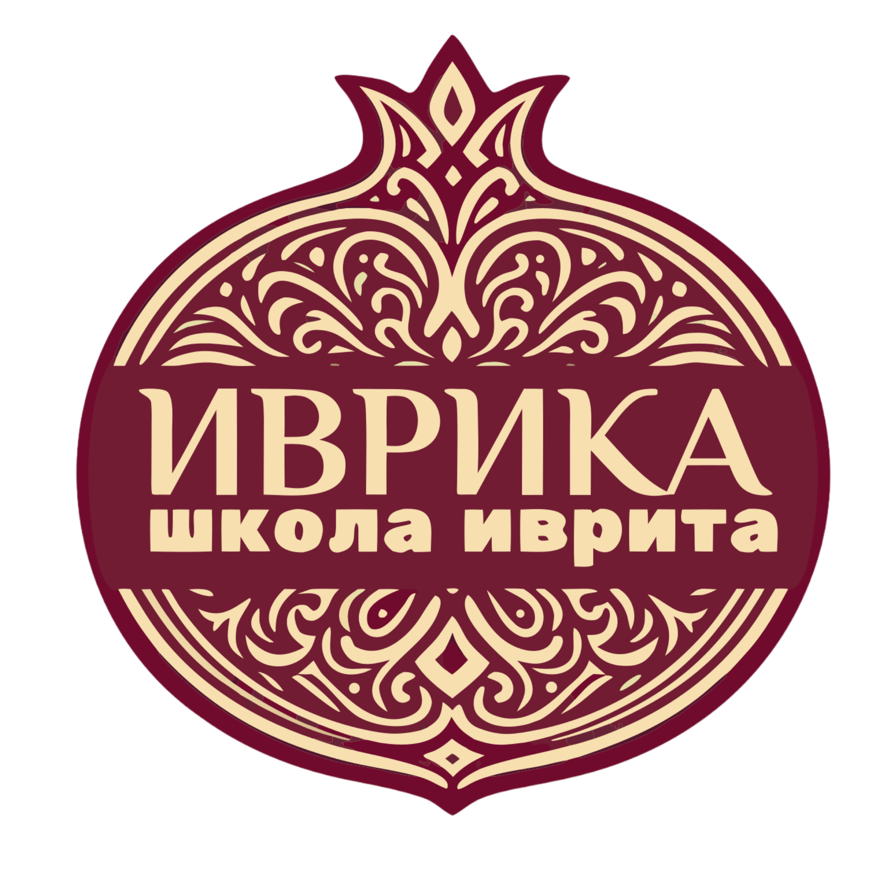

Онлайн-школа иврита. Солнечный Израиль.
Шрифт видео и соцсетей: Rubik. Заголовки Bold 700, основной текст Regular 400.
Взрослая редакционная печатная иллюстрация, резные формы, сухая краска. Символы: гранат и апельсин.